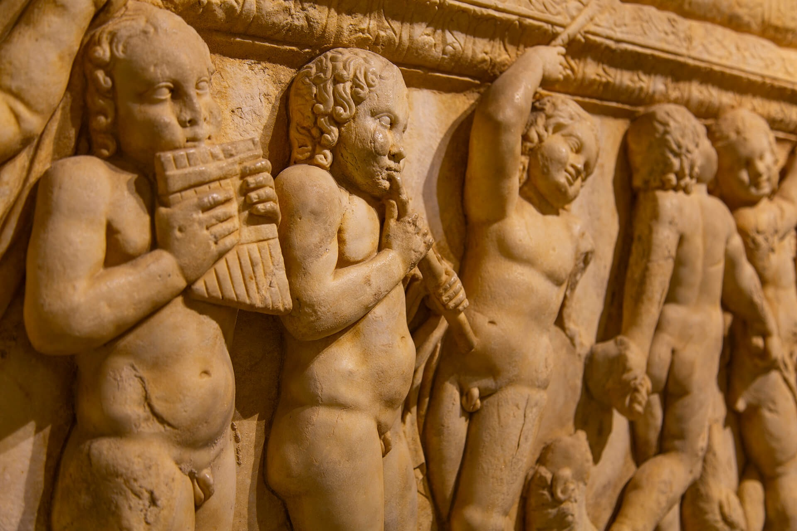

|  |
Antik aktarımlara göre MÖ 691/690 yılı civarında Rhodos kenti Lindos’un önderliğinde kurulmuştur. Uygun konumu ve Mısır, Fenike, Ege ve Yunanistan Doğu Akdeniz deniz güzergâhı üzerindeki üç doğal limanıyla kısa bir zamanda önemli bir ticaret kenti olmayı başarmıştır.Phaselis kentinin üzerinde kurulduğu yarımada, hemen arkasında 2365 m. yükselen Tahtalı Dağı ve bunun kuzeyinde uzanan Klimaks dağ sırası yüzünden iç kısımlardan soyutlanmıştır. Epigrafik belgeler sayesinde Phaselis teritoryumu sınırlarının kuzeyde Gökdere Vadisi’ne ulaştığı, güneyde Üç Adalar’dan Tahtalı Dağı istikametinde çekilecek bir hat doğrultusunda devam ettiği, batıda ise Çandır Vadisi boyunca uzandığı tespit edilebilmektedir.
Yaklaşık 288 dönüm alana yayılan yerleşim bölgesi denize doğru çıkıntı yapan yarımada ve kuzeyde yer alan tepe üzerinde uzanmaktadır.
Kente girişte karşımıza çıkan tapınağın büyük ve düzgün blok taşlardan yapılmış teras duvarları hala görülebilmektedir. Bunun kuzeyindeki terasta şehrin su ihtiyacını karşılayan kaynaklardan biri ve ev kalıntıları bulunmaktadır. Günümüze kadar ayakta kalmayı başarabilmiş su kemerleri (aquaduct) kentin en iyi korunmuş yapılarındandır.
Kent limanı ve güney liman arasında bağlantı sağlayan ana cadde uzanmaktadır. İki liman arasındaki arazide en kısa ve en uygun bağlantıyı sağlaması ve kent bölgesi içindeki merkezi konumu dolayısıyla, İmparatorluk Dönemi’nde kentin ana damarını teşkil etmiştir. Akropolis’in kuzeybatı etekleri üzerinde, skene ve caveası ile hala ayakta duran,1500 kişilik tiyatro yer almaktadır. Tiyatronun karşısında, ithaf yazıtından Hadrianus için yapıldığı tespit edilen Tetragonal Agora; onun karşısında Küçük Hamam ve tabanı mozaikle döşeli, üç yönde derin kanallarla çevrilmiş, latrina bulunmaktadır.
|